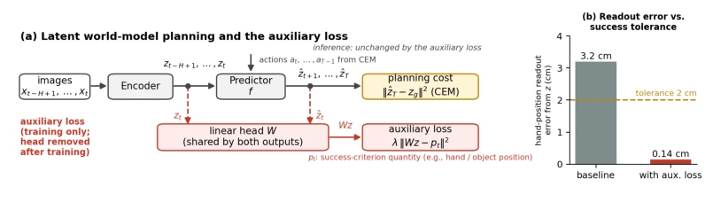
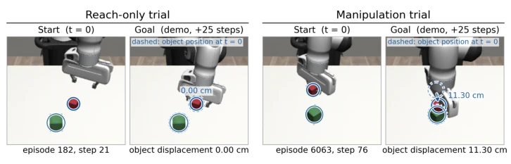
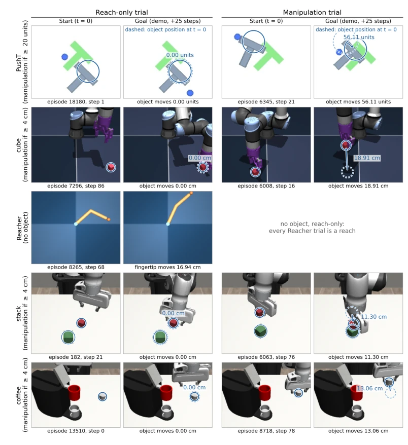
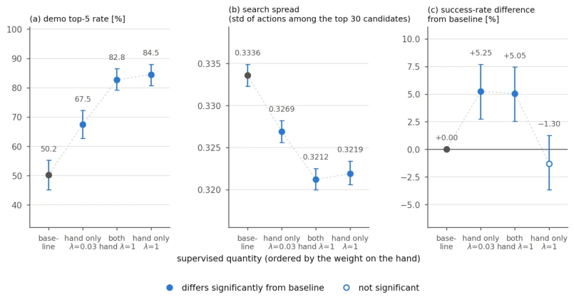
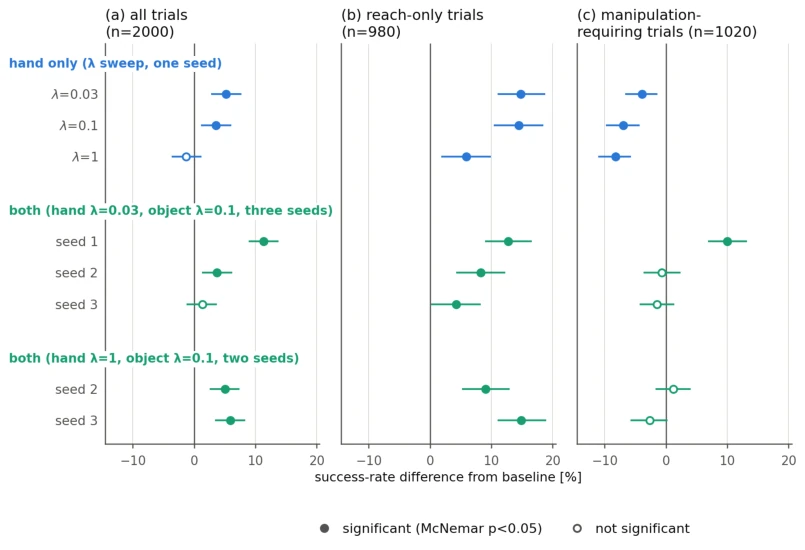
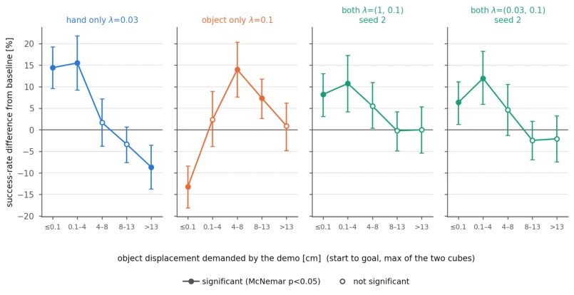

This paper accomplishes something that appears simple yet hits the pain point directly: since planning relies on latent space distance, this distance must be aligned with "success criteria". The authors sharply point out that existing implicit world models (such as LeWM, DINO-WM), although capable of predicting the future, cannot store the precise positions of "hands" and "objects" in latent states; the error even exceeds the tolerance of success determination, leading to blind guessing in planning. The proposed Auxiliary Loss is straightforward and direct: add a linear head during training, forcibly "read out" success criterion quantities (such as position) from the latent state and supervise the error, then discard them directly during testing. The results show an absolute success rate improvement of 3-5% on PushT and Cube tasks, statistically significant. However, this approach also has limitations: if only partial quantities are supervised, it leads to "taking from the east to patch the west," improving on one type of task while collapsing on another; and for non-numerical success criteria (such as contact, grasping), this approach currently cannot be effectively applied. Overall, this is a pragmatic work that "solves the most fatal flaw with minimal changes"; although it does not invent a new architecture, it thoroughly explains the "alignment" problem of latent space planning.
研究动机Motivation
核心问题在于：隐式世界模型（Latent World Models）在规划时，仅凭隐状态间的距离（latent distance）来排序动作序列，但任务的成功与否是由物理量（如手和物体的位置）是否满足特定容差（success-criterion quantities）决定的。如果隐状态无法以足够的精度编码这些物理量，规划就会失效。现有工作存在明显不足：DINO-WM (Zhou et al., 2025) 和 V-JEPA 2-AC (Assran et al., 2025) 虽然将本体感知状态（如手的位置）作为输入，但这并不保证预测后的隐状态能保留该信息的精度；PhyLatent (Zeng et al., 2026) 和 PSG-JEPA (Yan et al., 2026) 虽然将物理量作为训练目标，但由设计师随意选择监督对象，未与成功标准对齐。作者发现，在四个主流模型中，从隐状态线性回归出的手位置误差均大于成功判定的容忍度（如2cm），且这种误差不随表示大小或预训练消失。因此，必须有一种机制直接强制隐状态保留成功标准所需的精度，而不仅仅是作为输入或随意监督。
The core problem lies in: Latent World Models, when planning, sort action sequences solely based on the distance between latent states (latent distance), but whether a task succeeds or fails is determined by whether physical quantities (such as hand and object positions) satisfy specific tolerances (success-criterion quantities). If latent states cannot encode these physical quantities with sufficient precision, planning will fail. Existing work has obvious deficiencies: DINO-WM (Zhou et al., 2025) and V-JEPA 2-AC (Assran et al., 2025) although take proprioceptive states (such as hand position) as input, this does not guarantee that the predicted latent state retains the precision of this information; PhyLatent (Zeng et al., 2026) and PSG-JEPA (Yan et al., 2026) although take physical quantities as training objectives, the supervision targets are arbitrarily chosen by designers and are not aligned with success criteria. The authors found that in four mainstream models, the hand position error linearly regressed from latent states all exceeded the tolerance of success determination (e.g., 2cm), and this error does not disappear with representation size or pre-training. Therefore, there must be a mechanism that directly forces latent states to retain the precision required by success criteria, rather than merely serving as input or being arbitrarily supervised.

Figure 1: Planning with a latent world model and the auxiliary loss. (a) Planning with a latent world model, which is the same with and without the auxiliary loss. Red marks the auxiliary-loss path, which acts only at training time: a shared linear head reads the success-criterion quantities out of the latent states of the encoder and the predictor, and the error is added to the training loss. (b) Readout error of the hand position of LeWM on stack, the median over 5000 images not used for training; the dashed line is the tolerance of the success criterion, 2 cm. For the model supervised with the hand (λ = 1, Table 7) the error falls inside the tolerance.
The overall process is divided into two stages: training and inference. The inference stage fully reuses the baseline model: the encoder maps observed images to latent states, the predictor predicts future latent states based on historical latent states and actions, the planner (such as CEM) calculates the distance between predicted latent states and target latent states as cost, and selects the action sequence with the minimum distance. Auxiliary loss intervenes only during training. Specific innovations are as follows: 1. Auxiliary Loss Design: For each success criterion quantity (such as hand position, object position), share a Linear Head on the encoder output and predictor output respectively. 2. Supervision Target: Regress the output of the linear head with the true success criterion quantities recorded in demonstration data, calculating the mean squared error. 3. Loss Function Construction: Total Loss = World Model Original Loss + Auxiliary Loss. Auxiliary loss contains two parts: the readout cost error of encoder output and the readout cost error of predictor output, weighted and summed. 4. Post-training Processing: After training is completed, directly discard all linear heads and their parameters. This means that during testing, the model structure, input, computational load, and planning cost (latent space distance) are completely consistent with the baseline, requiring no additional sensors. 5. Strategy: Success criteria determine what is supervised, not the designer. Experiments show that supervising all success criterion quantities usually does not lead to performance degradation, while supervising only partial quantities may lead to Complementary Degradation.
Evaluated on five tasks (PushT, Cube, Reacher, Stack, Coffee), baselines are LeWM (trained from scratch) and DINO-WM type systems (frozen pre-trained encoder). Evaluation metric is Success Rate, using paired McNemar test to evaluate significance. Main findings: 1. Performance Improvement: In four manipulation tasks, supervising success criterion quantities significantly improved success rate (e.g., PushT improved by 3.5%, Cube improved by 3.4%). 2. Frozen Encoder Reproduction: On the Stack task with DINO-WM type system (frozen DINOv2 encoder), supervising hand position significantly improved success rate, proving the method does not depend on encoder training. 3. Complementary Degradation: In the Stack task, supervising only hand position improves "reach-only" tasks but worsens "manipulation" tasks, and vice versa; only supervising all quantities simultaneously can avoid this degradation. 4. Readout Cost and Success Rate Decoupling: Even if readout cost error decreases, if planning cost is not correctly aligned, success rate may not improve. 5. Limitations: Supervising non-success criterion quantities (such as hand in Cube) has no effect on success rate; frozen V-JEPA 2 model did not reproduce improvements on some tasks.

Figure 2: Examples of the trial strata (stack). The start frame and the goal frame of the demon- stration for a reach-only trial and a manipulation trial. The strata are those of Table 3; a trial with an object displacement of at least 4 cm is a manipulation trial. Solid circles mark the cube positions, dashed circles the positions at the start, and the number by the arrow is the displacement from start to goal. In the reach-only trial the dashed circle coincides with the solid one. Examples for all five tasks are in Figure 3 of Appendix C.

Figure 3: Examples of the trial strata (five tasks). For each task, the start frame and the goal frame of the demonstration for a reach-only trial and a manipulation trial. The strata are those of Table 3; a trial whose object displacement is at least the object tolerance (4 cm for stack, coffee, and cube; 20 units for PushT) is a manipulation trial. Solid circles mark the object position and dashed circles the position at the start; the number next to the arrow is the displacement from start to goal. In reach-only trials the dashed circle coincides with the solid one. The circle in PushT marks the object position, not the outline of the T. Reacher has no object, all of its trials are reach-only, and no marks are drawn. Because the criterion of cube has no hand term, its reach-only trials

Figure 4: Ranking of candidates, shape of the search, and success rate (stack). The horizontal axis orders the baseline and three auxiliary-loss models by the weight on the hand (the model super- vised with both quantities has object λ = 0.1). (a) Demo top-5 rate: the fraction of trials in which the demonstration action sequence ranks in the top five by cost among itself and 63 noisy copies (400 trials). (b) Search spread: the standard deviation of the actions among the top 30 candidates of the final CEM iteration in the actual planning; the smaller, the more focused the search (first plan of 2000 trials). (c) Difference in success rate from the baseline [%] (2000 trials). Intervals are 95%; filled markers mark a difference from the baseline whose interval excludes 0 (in (c), two-sided McN

Figure 5: Effect by trial stratum for eight auxiliary-loss models on stack. Difference in success rate from the baseline [%] on identical 2000 trial pairs; the strata have 980 reach-only and 1020 manipulation trials. Includes the hand-only (λ = 1) and the both (λ = 1, seed 2) models of Table 3. Seeds 1–3 are three training seeds, the same three for every arm. Bars are 95% intervals from a paired bootstrap over trials; filled markers are significant by two-sided paired McNemar (p < 0.05). The criterion is as in Table 3.

Figure 6: Demanded object displacement and the effect of the auxiliary loss (stack). Four auxiliary-loss models on stack, namely hand only with λ = 0.03, object only with λ = 0.1, both with λ = (1, 0.1), and both with λ = (0.03, 0.1) and seed 2, evaluated on the same 2000 trials binned by displacement. The horizontal axis is the bin of the start-to-goal displacement of the ob- ject, the larger of the two cubes. The vertical axis is the difference in success rate from the baseline [%]; bars are 95% intervals from a paired bootstrap over trials, and filled markers are significant by two-sided paired McNemar (p < 0.05). The five bins contain 645, 335, 236, 449, and 335 trials.